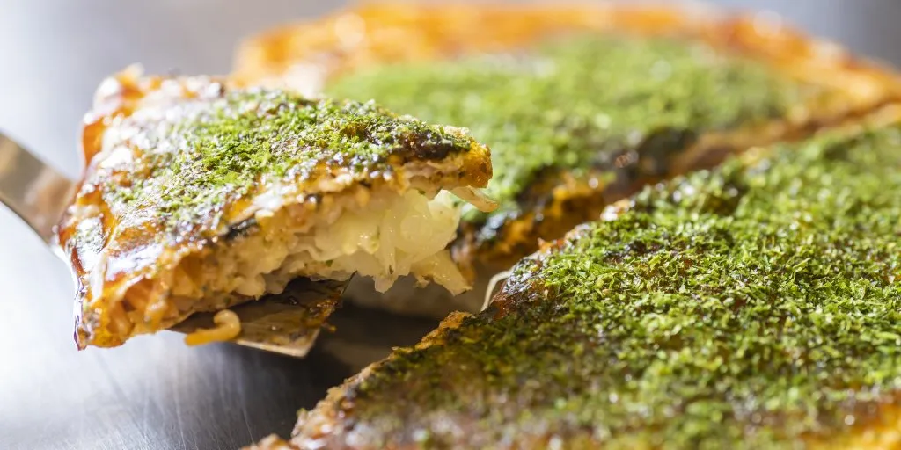
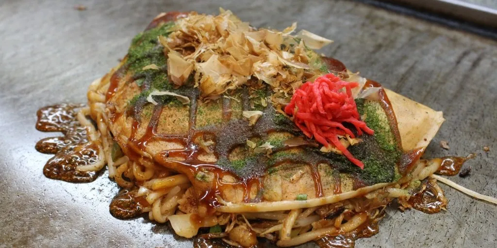
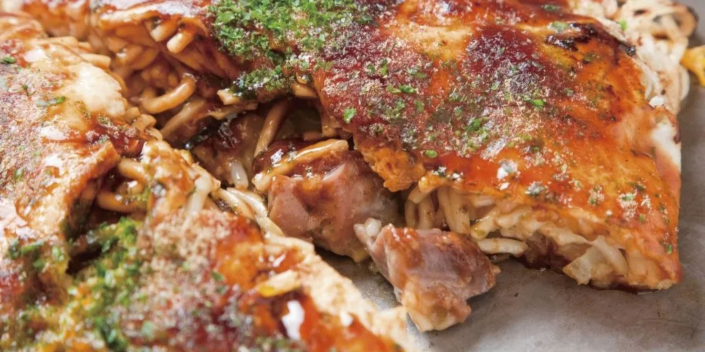

히로시마 의 명물 요리라고 하면, 「히로시마 오코노미야키」입니다. 밀가루를 녹인 것에, 야채나 돼지고기를 얹거나, 섞거나 해 굽는 요리는 그 밖에도 「간사이의 오코노미야키」나 「몬자야키(도쿄)」등이 있습니다만, 히로시마 오코노미야키는 히로시마(廣島) 만의 독특한 제법으로 만듭니다. 우선, 큰 철판 위에서 밀가루를 녹인 반죽을 얇고 원형으로 늘려 구워, 그 위에 양배추, 콩나물, 파 등의 야채를 충분히 태워 찜 구이로 합니다. 그 위에 곁을 겹쳐 구워 오코노미 야키용 소스를 바르고 푸른 김을 뿌려 완성입니다. 가게에 들어가 철판 앞에 앉아 있으면 실제로 요리하고 있는 곳을 볼 수도 있어요!

밖은 바삭하고, 안은 부드러운 식감이 버릇이되는 오코노미야키

구레시(吳市) 에서 배를 만드는 직공이 휴식 시간에 빨리 먹을 수 있도록 구레(吳) 명물의 가는 우동을 사용하여 반죽을 접은 반원형이 특징.

오노미치(尾道)에서 먹을 수 있는 오코노미야키로, 돼지고기 대신 해산물을 사용하여 맛이 깔끔한 것이 특징입니다.
| 대표 지역 | 히로시마 시내, 오코노미무라, 히로시마역 주변 |
|---|---|
| 주요 재료 | 양배추, 돼지고기, 소바면, 계란, 오코노미야키 소스 |
| 가격대 | 대체로 900엔 ~ 1,500엔 정도 |